CRVI000091Nobukazu Takemura - Scope
Designer unknown · Thrill Jockey · 1999
Designer unknown · Thrill Jockey · 1999

CRVI000087Tiziano Popoli, Marco Dalpane - Scorie
Designer unknown · Yaki Record · 1985
Designer unknown · Yaki Record · 1985

CRVI000984 - Jadwiga
Trademark · owner not established · designer unknown
Trademark · owner not established · designer unknown

CRVI000527Haley Kluge - No Words. What the Writers Strike Means for Hollywood
Variety, May 3, 2023 · 2023
Variety, May 3, 2023 · 2023

CRVI000645Robert Vargas - If You Can't Read That, You'd Better Read This
Bloomberg Businessweek, June 15–28 2015 · 2015
Bloomberg Businessweek, June 15–28 2015 · 2015

CRVI001896Joseph Kosuth - Ex Libris (Wittgenstein's Gift)
1990
1990

CRVI000232Abstract Truth - Get Another Plan
Designer unknown · Streetwave Music · 1996
Designer unknown · Streetwave Music · 1996

CRVI001870Carl Andre - Belgica Blue Field
1989
1989

CRVI000490Unknown - The Psychic Toll of a Dead-Even Race
New York, November 4-17, 2024 · 2024
New York, November 4-17, 2024 · 2024

CRVI000025Gesellschaft Zur Emanzipation Des Samples - Circulations
Designed by Jens Reitemeyer · Faitiche · 2009
Designed by Jens Reitemeyer · Faitiche · 2009

CRVI000140Jutaro Itoh - 企業空間のサイン — Corporate Signs (Designing Signs Vol. 2)
Jutaro Itoh and Atsuko Taguchi · Rikuyo-sha
Jutaro Itoh and Atsuko Taguchi · Rikuyo-sha

CRVI000855Richard Turley - Design
Bloomberg Businessweek · 2012
Bloomberg Businessweek · 2012

CRVI000316Moritz Von Oswald Trio - Horizontal Structures
Designer unknown · Honest Jon's · 2011
Designer unknown · Honest Jon's · 2011

CRVI001843François Morellet - Two Warps and Wefts of Short Lines 0°–90°
1956
1956

CRVI000402Matthew Herbert - Around the House
Designer unknown · Studio IK7 · 1998
Designer unknown · Studio IK7 · 1998

CRVI000556Gail Bichler - The Future of Work When No One Wants to Work
The New York Times Magazine, February 20, 2022 · 2022
The New York Times Magazine, February 20, 2022 · 2022

CRVI000269The Brandt Brauer Frick Ensemble - Mr. Nachine
Designer unknown · Studio IK7 · 2011
Designer unknown · Studio IK7 · 2011

CRVI001361Andrew Kuo - Charting 'Thank You for Letting Me Be Myself' by Omar S
Chart for The New York Times · 2013-06-25 · 2013
Chart for The New York Times · 2013-06-25 · 2013

CRVI001721Sonia Delaunay - Fashion illustration

CRVI000036Various - Close to the Noise Floor (Formative UK Electronica 1975-1984)
Designed by Lora Findlay · 2016
Designed by Lora Findlay · 2016

CRVI000321Loscil - Plume
Designer unknown · Kranky · 2006
Designer unknown · Kranky · 2006

CRVI000989Honey Packers, Inc. - honey
Trademark · Honey · New York, New York · designer unknown · 1936
Trademark · Honey · New York, New York · designer unknown · 1936

CRVI000937 - Nuki
Trademark · owner not established · designer unknown
Trademark · owner not established · designer unknown

CRVI000974 - new gold
Trademark · owner not established · designer unknown
Trademark · owner not established · designer unknown

CRVI000247Marisol - Untitled
Exhibition Poster · 1960-65 · 1960-65
Exhibition Poster · 1960-65 · 1960-65

CRVI001360Andrew Kuo - Charted: The Year of Kanye West
Chart for The New York Times · 2013-12-13 · 2013
Chart for The New York Times · 2013-12-13 · 2013

CRVI001388Ruth Asawa - Untitled (S.693, Hanging Six-Lobed, Two-Part, Discontinuous Surface with a Sphere in the First Lobe)
Ruth Asawa · c. 1956 · hanging sculpture, brass and iron wire · photograph by Dan Bradica · 1956
Ruth Asawa · c. 1956 · hanging sculpture, brass and iron wire · photograph by Dan Bradica · 1956

CRVI002539Eduard Josef Wimmer-Wisgrill - Fashion design for the Wiener Werkstätte

CRVI001037 - Drawing on music staves
Cooper Hewitt, Smithsonian Design Museum, 1981-29-424
Cooper Hewitt, Smithsonian Design Museum, 1981-29-424

CRVI001003Cleveland Institute of Radio Electronics - C i
Trademark · Pamphlets, Books, and Other Publications · Cleveland, Ohio · designer unknown · 1956
Trademark · Pamphlets, Books, and Other Publications · Cleveland, Ohio · designer unknown · 1956

CRVI000970 - Laff
Trademark · owner not established · designer unknown
Trademark · owner not established · designer unknown

CRVI002858Rosmarie Tissi - Schweizer Plakate des Jahres 1996
1996
1996

CRVI000077Fluence - Fluence
Designer unknown · Pôle Records · 1975
Designer unknown · Pôle Records · 1975

CRVI000983 - New Pride
Trademark · owner not established · designer unknown
Trademark · owner not established · designer unknown
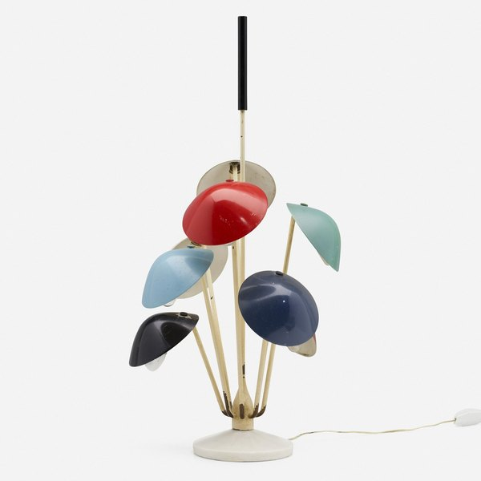
CRVI002721Gino Sarfatti - Table lamp, model 534
1951
1951

CRVI001889Alighiero Boetti - Der Himmel über

CRVI000933 - AD
Trademark · owner not established · designer unknown
Trademark · owner not established · designer unknown

CRVI002432Unattributed - Marty Supreme Tennis Balls
2025
2025

CRVI000981 - Dewis
Trademark · owner not established · designer unknown
Trademark · owner not established · designer unknown

CRVI002723Poul Henningsen - PH 5 pendant
1958
1958

CRVI002428Unattributed - Bring Her Back x Basketcase Ritual Tee
2025
2025

CRVI001861Unidentified - Graphis 118
1962
1962
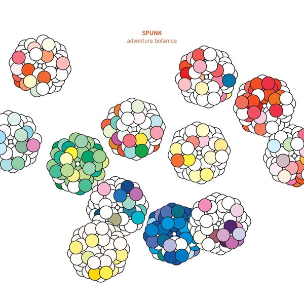
CRVI003007Kim Hiorthøy - Spunk — Adventura Botanica
2014
2014

CRVI000916 - An angular E or F crossed by an arrow
Trademark · owner not established · designer unknown
Trademark · owner not established · designer unknown

CRVI000796Hannah Wilke - Untitled
Coloured pencil, pencil and graphite on paper · 45.7 × 61 cm · 1969
Coloured pencil, pencil and graphite on paper · 45.7 × 61 cm · 1969

CRVI002118Eva Hesse - Untitled
1965
1965

CRVI000921Dow Corning Corporation - DOW CORNING
Trademark · Organopolysiloxane Fluids for Use as Polishes and Polish Ingredients · Midland, Michigan · designer unknown · 1957
Trademark · Organopolysiloxane Fluids for Use as Polishes and Polish Ingredients · Midland, Michigan · designer unknown · 1957

CRVI000976 - FRAT HOUSE
Trademark · owner not established · designer unknown
Trademark · owner not established · designer unknown

CRVI001354Ruth Asawa - Untitled (S.237, Hanging Six-Lobed, Interlocking Continuous Form)
Ruth Asawa · c. 1958 · hanging sculpture, enameled copper and brass wire · 1958
Ruth Asawa · c. 1958 · hanging sculpture, enameled copper and brass wire · 1958

CRVI001384Whitney Museum of American Art - Annual Exhibition 1966: Contemporary Sculpture and Prints
Designer unrecorded · Exhibition catalogue · Dec 16, 1966 – Feb 5, 1967 · 1966
Designer unrecorded · Exhibition catalogue · Dec 16, 1966 – Feb 5, 1967 · 1966

CRVI002212Piet Mondrian - Lozenge Composition with Red, Gray, Blue, Yellow and Black
1925
1925

CRVI000389SND - Stdio
Designer unknown · Mille Plateaux · 2000
Designer unknown · Mille Plateaux · 2000

CRVI001004 - An orbital cage folded from ribbons
Trademark · owner not established · designer unknown
Trademark · owner not established · designer unknown

CRVI000893 - NO-MO
Trademark · owner not established · designer unknown
Trademark · owner not established · designer unknown

CRVI000428The Chills - Brave Words
Designer unknown · Flying Nun Records · 1987
Designer unknown · Flying Nun Records · 1987

CRVI000894 - A figure whose head and body are a television set
Trademark · owner not established · designer unknown
Trademark · owner not established · designer unknown

CRVI000938 - NEON
Trademark · owner not established · designer unknown
Trademark · owner not established · designer unknown

CRVI002138Chris Burden - Untitled

CRVI000005Rashad Becker - Traditional Music of Notional Species Vol. II
Artwork by Bill Kouligas · 2017
Artwork by Bill Kouligas · 2017

CRVI000547Oliver Munday - Who Killed America's Newspapers?
The Atlantic, November 2021 · 2021
The Atlantic, November 2021 · 2021

CRVI001901Unidentified - Blue shaped panel

CRVI002424Gustav Klutsis - Design for an agitational stand
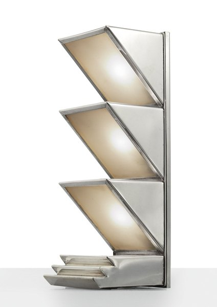
CRVI002731Donald Deskey - Table Lamp
1927
1927

CRVI000281Romare - Projections
Designer unknown · Ninja Tune · 2015
Designer unknown · Ninja Tune · 2015

CRVI000451Derek Birdsall - Creativity
Cover for P. E. Vernon · Penguin Education · 1972
Cover for P. E. Vernon · Penguin Education · 1972

CRVI002429Unattributed - We Live In Time Kitchen Timer
2024
2024

CRVI000940H.F. Stimm, Inc. - S
Trademark · Construction and Repair of Buildings and Bridges · Buffalo, New York · designer unknown · 1956
Trademark · Construction and Repair of Buildings and Bridges · Buffalo, New York · designer unknown · 1956

CRVI000502Peter Herbert - The World at a Crossroads
Fortune, August/September 2020 · 2020
Fortune, August/September 2020 · 2020

CRVI000617Nejc Prah, Simon Dawson/Bloomberg - Big Changes at the Top
Bloomberg Businessweek, March 19 2018 · 2018
Bloomberg Businessweek, March 19 2018 · 2018

CRVI002545Gudrun Baudisch - Ceramic lamp stand
1928
1928

CRVI001366Kenny Burrell - Kenny Burrell
Cover drawing by Andy Warhol · Blue Note 1543 · 1957
Cover drawing by Andy Warhol · Blue Note 1543 · 1957

CRVI000780Paul Rand - Jacqueline Cochran leg makeup
Advertisement
Advertisement

CRVI000452Derek Birdsall - Reconstructing Social Psychology
Cover for Nigel Armistead · Penguin Education · 1972
Cover for Nigel Armistead · Penguin Education · 1972

CRVI000973 - PARK LANE
Trademark · owner not established · designer unknown
Trademark · owner not established · designer unknown

CRVI000892 - A punched card drawn as a figure with spectacles and a pipe
Trademark · owner not established · designer unknown
Trademark · owner not established · designer unknown

CRVI002105Martin Kippenberger - Untitled (Aussen Alster Hotel)
1985
1985

CRVI000954Coopers, Inc. - Four figures in undergarments beneath a waistband marked OPENING; the only caption on the page
Trademark · Men's Undergarments · Kenosha, Wisconsin · designer unknown · 1938
Trademark · Men's Undergarments · Kenosha, Wisconsin · designer unknown · 1938

CRVI000531Unknown - The Lunacy of Text-Based Therapy
New York, March 29-April 11, 2021 · 2021
New York, March 29-April 11, 2021 · 2021

CRVI000400C+C Music Factory - Gonna Make You Sweat
Designer unknown · CBS · 1990
Designer unknown · CBS · 1990

CRVI000966 - METAPAD
Trademark · owner not established · designer unknown
Trademark · owner not established · designer unknown

CRVI000448Derek Birdsall - Socialization
Cover for Kurt Danziger · Penguin Education · 1972
Cover for Kurt Danziger · Penguin Education · 1972
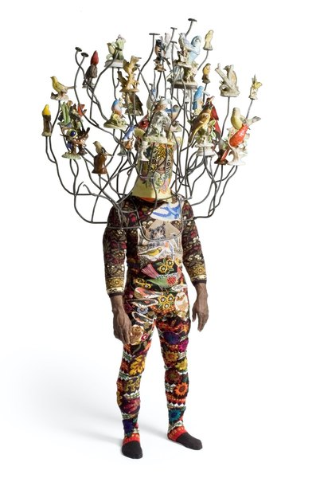
CRVI003227Nick Cave - Untitled

CRVI000797Hannah Wilke - Untitled
Coloured pencil and pencil on paper · 45.7 × 61 cm · 1967
Coloured pencil and pencil on paper · 45.7 × 61 cm · 1967

CRVI000900 - X1
Trademark · owner not established · designer unknown
Trademark · owner not established · designer unknown

CRVI000011Cluster - Curiosum
Artwork by Dieter Moebius · Sky Records · 1981
Artwork by Dieter Moebius · Sky Records · 1981

CRVI000047Various - Hohokum Soundtrack
Designed by Richard Hogg · Ghostly International · 2014
Designed by Richard Hogg · Ghostly International · 2014

CRVI000034Teams - Dxys Xff
Artwork by Jónó Mí Ló · AMDISCS · 2011
Artwork by Jónó Mí Ló · AMDISCS · 2011

CRVI002383Dick Higgins - Hommage to Africa
1989
1989

CRVI001291Phil Woods, Gene Quill, Sahib Shihab, Hal Stein - Four Altos
Designed by Reid Miles · Prestige 7116 · 1958
Designed by Reid Miles · Prestige 7116 · 1958

CRVI000971 - Two heavy 3-D letters
Trademark · owner not established · designer unknown
Trademark · owner not established · designer unknown

CRVI000890 - Figure on a unicycle carrying a box
Trademark · owner not established · designer unknown
Trademark · owner not established · designer unknown

CRVI000733Robert Beatty - Untitled
Album cover · artist and title unrecorded · Trendland plate 02
Album cover · artist and title unrecorded · Trendland plate 02
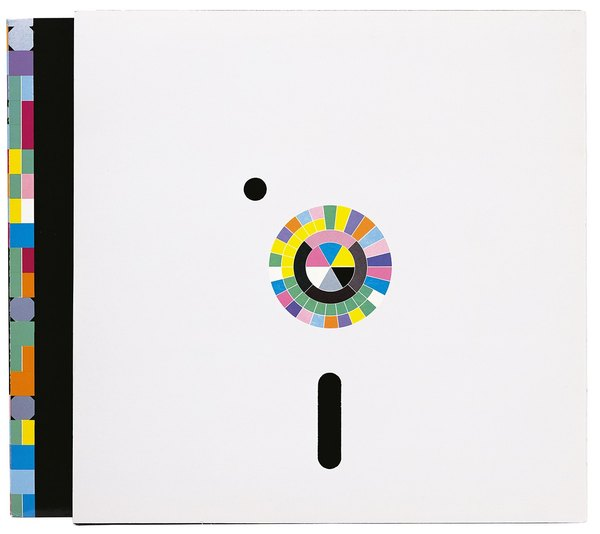
CRVI003070Peter Saville - Power, Corruption & Lies
LP back cover, Factory FACT 75 · 1983
LP back cover, Factory FACT 75 · 1983
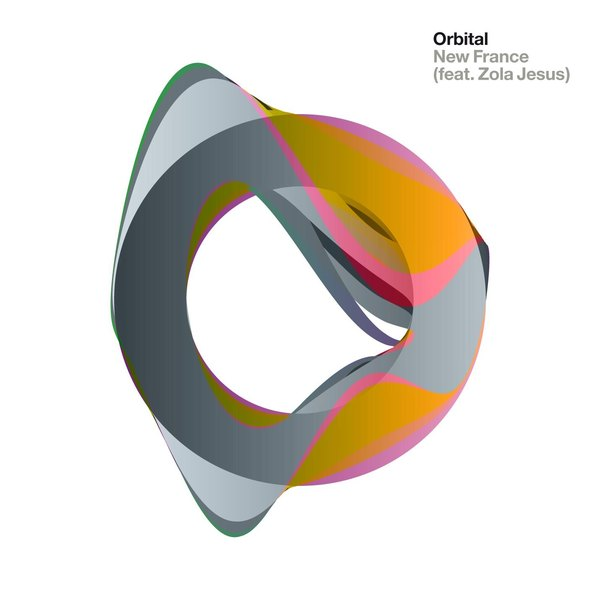
CRVI003207Mark Farrow - Orbital, Wonky Remixes
Album artwork
Album artwork

CRVI000950 - SUSIE Q
Trademark · owner not established · designer unknown
Trademark · owner not established · designer unknown

CRVI000053Pierre Schaeffer - Le Trièdre Fertile
Designed by Stephen O'Malley · Philips · 1978
Designed by Stephen O'Malley · Philips · 1978

CRVI000108Masuteru Aoba - A.D. 3000 ⋯ Energy-Addicted Man?
エネルギーに頼り過ぎた3000年の人間？
エネルギーに頼り過ぎた3000年の人間？

CRVI002294Jeff Koons - Amore
1988
1988

CRVI000943Homasote Company - BIG SHEETS
Trademark · Wall Board and Fibrous Material · Trenton, New Jersey · designer unknown · 1955
Trademark · Wall Board and Fibrous Material · Trenton, New Jersey · designer unknown · 1955

CRVI000992John Sunshine Chemical Co., Inc. - CANNIBAL — EATS EVERYTHING IN THE PIPE
Trademark · Drainpipe Cleaner · Chicago, Illinois · designer unknown · 1938
Trademark · Drainpipe Cleaner · Chicago, Illinois · designer unknown · 1938

CRVI002233Oskar Schlemmer - Bauhausausstellung 1923
1923
1923
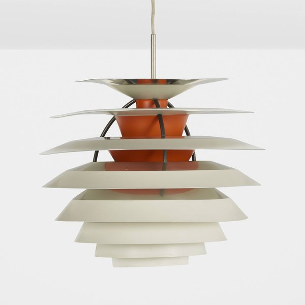
CRVI002724Poul Henningsen - PH Kontrast pendant

CRVI001001Community Church of Religious Science - Your world is Your reflection of Your understanding
Trademark · Religious Educational Books · Los Angeles, California · designer unknown · 1974
Trademark · Religious Educational Books · Los Angeles, California · designer unknown · 1974

CRVI000071David Kanaga - Dyad OGST
Designer unknown · Software · 2013
Designer unknown · Software · 2013

CRVI002252Claes Oldenburg - Alphabet/Good Humor

CRVI001006Wilson & Company, Inc. - W
Trademark · Fresh, Cooked, Smoked, Cured and Frozen Meats · Chicago, Illinois · designer unknown · 1957
Trademark · Fresh, Cooked, Smoked, Cured and Frozen Meats · Chicago, Illinois · designer unknown · 1957

CRVI000095Martin Davorin Jagodic - Tempo Furioso (Tolles Wetter)
Designer unknown · nova musicha - n. · 1975
Designer unknown · nova musicha - n. · 1975

CRVI002482Héctor Lavoe - Live

CRVI000913 - 1 / 10
Trademark · owner not established · designer unknown
Trademark · owner not established · designer unknown
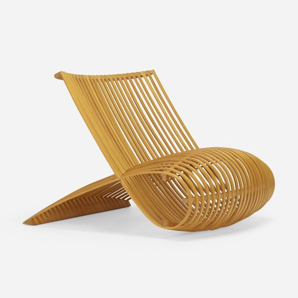
CRVI003204Marc Newson - Wooden Chair
1988
1988

CRVI000915 - Marlou
Trademark · owner not established · designer unknown
Trademark · owner not established · designer unknown

CRVI000934Miljam Plastic Instrument Manufacturing Company, Inc. - Injex
Trademark · Plastic instruments · designer unknown · 1952
Trademark · Plastic instruments · designer unknown · 1952

CRVI000449Derek Birdsall - Peasants and Peasant Societies
Cover for Teodor Shanin · Penguin Education · 1972
Cover for Teodor Shanin · Penguin Education · 1972

CRVI002131Judy Chicago - 3 Star Cunts
1969
1969

CRVI000284David Olère - Pour l'Amour du Ciel! (For Heaven's Sake)
Press book illustration · Paramount, Paris
Press book illustration · Paramount, Paris

CRVI000144Bud Shank Quartet - Jazz at Cal-Tech
Designed by William Claxton · Pacific Jazz 1219 · 1956
Designed by William Claxton · Pacific Jazz 1219 · 1956

CRVI000911Bell Aircraft Corporation - BELL Aircraft
Trademark · Wheatfield, New York · designer unknown · 1946
Trademark · Wheatfield, New York · designer unknown · 1946

CRVI001392Paul Natkin - Lil' Ed & The Blues Imperials
Photograph by Paul Natkin
Photograph by Paul Natkin

CRVI001834Richard Anuszkiewicz - Spring Mix
2000
2000
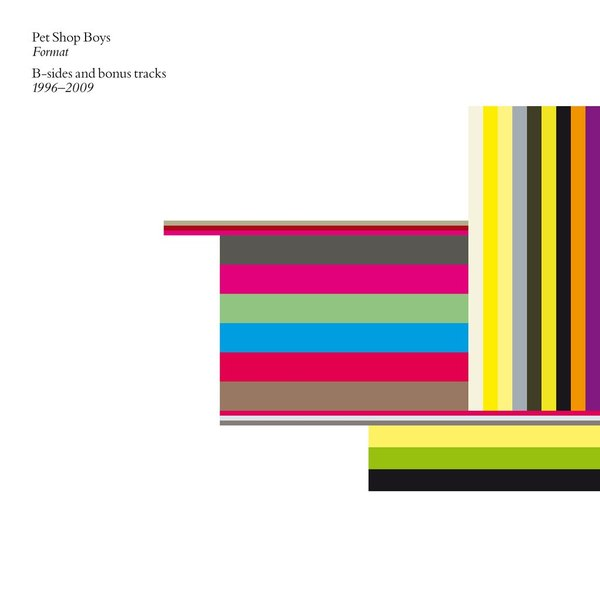
CRVI003206Mark Farrow - Format (B-Sides and Bonus Tracks)
Album artwork
Album artwork

CRVI000447Derek Birdsall - Ideology
Cover for L. B. Brown · Penguin Education · 1972
Cover for L. B. Brown · Penguin Education · 1972

CRVI000997Five Minute Home Cleaner Co. - A figure holding a clock aloft — the five minutes of the company's name
Trademark · Dry Cleaner · Chicago, Illinois · designer unknown · 1930
Trademark · Dry Cleaner · Chicago, Illinois · designer unknown · 1930

CRVI000246Keiji Usami - Louisiana exhibition poster
Exhibition poster · Louisiana Museum of Modern Art
Exhibition poster · Louisiana Museum of Modern Art

CRVI000109Katsumi Asaba - Bauhaus.
Misawa Design, bauhaus collection · after Lyonel Feininger's woodcut 'Cathedral', 1919 · 2009
Misawa Design, bauhaus collection · after Lyonel Feininger's woodcut 'Cathedral', 1919 · 2009

CRVI000006Objekt - Flatland
Artwork by Bill Kouligas, Kathryn Politis, Traianos Pakioufakis · Pan · 2014
Artwork by Bill Kouligas, Kathryn Politis, Traianos Pakioufakis · Pan · 2014

CRVI000948 - SKE-DADDLE
Trademark · owner not established · designer unknown
Trademark · owner not established · designer unknown

CRVI002227László Moholy-Nagy - Untitled

CRVI000841Ottagono - Ottagono 18
settembre 1970 · anno 5 · 1970
settembre 1970 · anno 5 · 1970

CRVI001143Jackie McLean - Destination... Out!
Designed by Larry Miller, photograph by Francis Wolff · Blue Note BLP 4165 · 1964
Designed by Larry Miller, photograph by Francis Wolff · Blue Note BLP 4165 · 1964

CRVI000926Ernest H. Vanderwall Company - EVCO
Trademark · Lathe Center · San Francisco, California · designer unknown · 1947
Trademark · Lathe Center · San Francisco, California · designer unknown · 1947

CRVI000518Gail Bichler - What Was Twitter, Anyway?
The New York Times Magazine, April 23, 2023 · 2023
The New York Times Magazine, April 23, 2023 · 2023

CRVI000528Gail Bichler - Should You Be in Therapy?
The New York Times Magazine, May 21, 2023 · 2023
The New York Times Magazine, May 21, 2023 · 2023

CRVI000050Shackleton & Vengeance Tenfold - Sferic Ghost Transmits
Designed by Sandhya Ellis · Honest Jon's Records · 2017
Designed by Sandhya Ellis · Honest Jon's Records · 2017

CRVI001230Mati Klarwein - Self-portrait after Dürer
Painting · plate P01-50s-self-durer on the artist's own site · 1950s
Painting · plate P01-50s-self-durer on the artist's own site · 1950s

CRVI001954Marina Abramović - Untitled
1990
1990

CRVI000453Derek Birdsall - Culture Against Man
Cover for Jules Henry · Penguin Education · 1972
Cover for Jules Henry · Penguin Education · 1972

CRVI000543Bobby Doherty - New Yawk Style
New York, March 1-14, 2021 · 2021
New York, March 1-14, 2021 · 2021

CRVI000103Visible Cloaks - Reassemblage
Designed by Will Work For Good · Rvng Intl. · 2017
Designed by Will Work For Good · Rvng Intl. · 2017

CRVI002431Unattributed - Marty Supreme Basketball
2025
2025

CRVI001908John Baldessari - Painting for Kubler
1968
1968

CRVI000237Bullitnuts - 1st Of The Day
Designer unknown · Pork Recordings · 1996
Designer unknown · Pork Recordings · 1996

CRVI000464Richard Turley - The Hedge Fund Myth
Bloomberg Businessweek, 15 July 2013 · 2013
Bloomberg Businessweek, 15 July 2013 · 2013

CRVI000793Roy Kuhlman - Yoo-Yoo
Journal of the American Medical Association · 1954
Journal of the American Medical Association · 1954

CRVI001875Agnes Martin - Untitled #12
1977
1977

CRVI001357Ruth Asawa - Untitled (S.055, Hanging Asymmetrical Nine Interlocking Bubbles)
Ruth Asawa · c. 1955 · hanging sculpture, galvanized steel, enameled copper and brass wire · 1955
Ruth Asawa · c. 1955 · hanging sculpture, galvanized steel, enameled copper and brass wire · 1955

CRVI000668Sam Kaplan, Brian Byrne - How to Stop a Civil War
The Atlantic, December 2019 · 2019
The Atlantic, December 2019 · 2019

CRVI000951 - THE JITTERBUG
Trademark · owner not established · designer unknown
Trademark · owner not established · designer unknown

CRVI001937Gary Hume - Whistler
1998
1998

CRVI000968 - A fan of blades rising from a ringed monogram
Trademark · owner not established · designer unknown
Trademark · owner not established · designer unknown

CRVI001171Serge Chaloff - Blue Serge
Designer unrecorded · Capitol Records T 742 · 1956
Designer unrecorded · Capitol Records T 742 · 1956

CRVI001014Delcon Corp. - d
Trademark · Electrical Measuring Devices · Palo Alto, California · designer unknown · 1963
Trademark · Electrical Measuring Devices · Palo Alto, California · designer unknown · 1963

CRVI000924Bowlerama, Inc. - BOWLERAMA
Trademark · Promoting the Business of Bowling Alley Operations · Minneapolis, Minnesota · designer unknown · 1954
Trademark · Promoting the Business of Bowling Alley Operations · Minneapolis, Minnesota · designer unknown · 1954

CRVI000901Micro-Master, Inc. - An atom whose nucleus is a head
Trademark · Photograph Developing · Kansas City, Missouri · designer unknown · 1957
Trademark · Photograph Developing · Kansas City, Missouri · designer unknown · 1957

CRVI000085Lussuria - American Babylon
Designer unknown · Hospital Productions · 2012
Designer unknown · Hospital Productions · 2012

CRVI001496El Lissitzky - Announcer
1923
1923

CRVI000799Joseph Beuys - Ein Vergleich zweier Gesellschaftsformen
Polythene carrier bag with felt · art intermedia Edition · 10,000 copies · 1971
Polythene carrier bag with felt · art intermedia Edition · 10,000 copies · 1971

CRVI001956Takashi Murakami - Army of Mushrooms
2003
2003

CRVI000721Ziemba - True Romantic
Designed by Robert Beatty · Sister Polygon Records · 2020
Designed by Robert Beatty · Sister Polygon Records · 2020

CRVI000986Southern Oak Flooring Industries - SOFI
Trademark · Flooring: Tongued and Grooved, End-Matched, Square Edge Strips, Parquetry and Fabricated Blocks · Little Rock, Arkansas · designer unknown · 1931
Trademark · Flooring: Tongued and Grooved, End-Matched, Square Edge Strips, Parquetry and Fabricated Blocks · Little Rock, Arkansas · designer unknown · 1931

CRVI001757László Moholy-Nagy - Composition A XI
1923
1923

CRVI002365Tauba Auerbach - Untitled (The Whole Alphabet, From the Center Out)

CRVI001008Motown Records Corp. - The Supremes
Trademark · Entertainment Services · Detroit, Michigan · designer unknown · 1974
Trademark · Entertainment Services · Detroit, Michigan · designer unknown · 1974

CRVI000285Unknown - Heinz Tomato Juice — We're Sorry There Aren't Enough of our kind to go 'round
Advertisement · Fortune magazine · 1935 · 1935
Advertisement · Fortune magazine · 1935 · 1935

CRVI000586Unknown - This Machine Swallows Buses While Going 60 mph
New York, February 24, 1969 · 1969
New York, February 24, 1969 · 1969
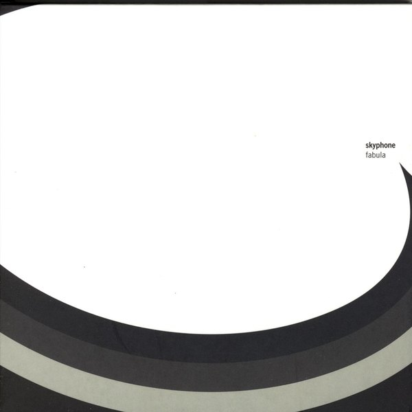
CRVI002869Kim Hiorthøy - Skyphone — Fabula
2004
2004

CRVI000909Prestile Manufacturing Company - PRESTILE
Trademark · Synthetic Adhesive Cements in Liquid or Solid Form · Chicago, Illinois · designer unknown · 1947
Trademark · Synthetic Adhesive Cements in Liquid or Solid Form · Chicago, Illinois · designer unknown · 1947

CRVI001744Piet Mondrian - Lozenge Composition with Yellow, Black, Blue, Red, and Gray
1921
1921

CRVI001747Bart van der Leck - Composition

CRVI000935 - N o
Trademark · owner not established · designer unknown
Trademark · owner not established · designer unknown

CRVI001872Agnes Martin - Aspiration
1960
1960
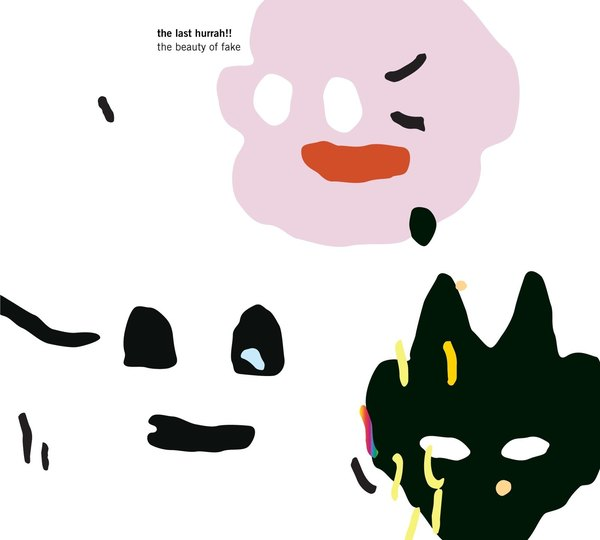
CRVI003005Kim Hiorthøy - The Last Hurrah!! — The Beauty Of Fake
2013
2013

CRVI002130Judy Chicago - Pasadena Lifesavers Red #5
1970
1970

CRVI000177Hank Mobley - Tenor Conclave
Designed by Bob Weinstock · Prestige LP 7074 · 1956
Designed by Bob Weinstock · Prestige LP 7074 · 1956

CRVI001863Donald Judd - Untitled (drawing)
1963
1963

CRVI001466Unidentified - Nursery interior with a child in a wicker cradle-cart

CRVI000014Bernard Bonnier - Casse‐tête
Designed by Eric Mattson · Amaryllis · 1984
Designed by Eric Mattson · Amaryllis · 1984

CRVI000634Unknown - Single Women
New York, February 22-March 6 2016 · 2016
New York, February 22-March 6 2016 · 2016

CRVI000241Phil Baines - Why I Am So Wise
Cover for Friedrich Nietzsche · Penguin Great Ideas · 2004
Cover for Friedrich Nietzsche · Penguin Great Ideas · 2004

CRVI001618Pierre Bonnard - Family Scene
1893
1893

CRVI000614Barry Blitt - Welcome to Congress
The New Yorker, November 19 2018 · 2018
The New Yorker, November 19 2018 · 2018

CRVI000794Roy Kuhlman - The Ticket That Exploded
Grove Press · William S. Burroughs
Grove Press · William S. Burroughs

CRVI001309Lee Morgan - The Rumproller
Designed by Reid Miles, photograph by Francis Wolff · Blue Note 4199 · 1965
Designed by Reid Miles, photograph by Francis Wolff · Blue Note 4199 · 1965

CRVI000591Unknown - Doctor Feelgood, You Make Me Feel So Good. Are You Sure It's All Right?
New York, February 8, 1971 · 1971
New York, February 8, 1971 · 1971

CRVI000964 - EZ ON THE (eyes)
Trademark · owner not established · designer unknown
Trademark · owner not established · designer unknown

CRVI002024Unidentified - Pink poured painting

CRVI000965Atlas Tack Corp. - ATLAS
Trademark · Nails and Tacks · Fairhaven, Massachusetts · designer unknown · 1936
Trademark · Nails and Tacks · Fairhaven, Massachusetts · designer unknown · 1936

CRVI000305Yellow Magic Orchestra - BGM
Designer unknown · Alfa · 1981
Designer unknown · Alfa · 1981

CRVI000734Robert Beatty - Untitled
Album cover · artist and title unrecorded · Trendland plate 03
Album cover · artist and title unrecorded · Trendland plate 03

CRVI001856Unidentified - Caricature of a man with a bottle

CRVI000505Gail Bichler - What We've Learned in Quarantine
The New York Times Magazine, May 24, 2020 · 2020
The New York Times Magazine, May 24, 2020 · 2020

CRVI002384Dick Higgins - Graphis No. 82
1960
1960

CRVI000026Blessed Initiative - Blessed Initiative
Designed by John Coulthart · Subtext · 2016
Designed by John Coulthart · Subtext · 2016

CRVI001511Kazimir Malevich - Painterly Realism of a Football Player — Color Masses in the 4th Dimension
Summer/fall 1915
Summer/fall 1915

CRVI002486Eddie Palmieri - Vámonos Pa'l Monte
1971
1971

CRVI000903Pacific Gas Corporation - PACIFIC GAS
Trademark · Butane and Propane Gases · New York, New York · designer unknown · 1948
Trademark · Butane and Propane Gases · New York, New York · designer unknown · 1948

CRVI002297Jeff Koons - One Ball Total Equilibrium Tank (Spalding Dr. J 241 Series)
1985
1985

CRVI001444Joseph Maria Olbrich - Entwürfe zu Arbeiterhäusern
Plate from Architektur von Olbrich
Plate from Architektur von Olbrich

CRVI001381Benny Golson - Benny Golson and the Philadelphians
Designer unrecorded · United Artists 4020 · 1959
Designer unrecorded · United Artists 4020 · 1959

CRVI000599Unknown - 1977: It All Happened Here. Where Else?
New York, December 26, 1977 · 1977
New York, December 26, 1977 · 1977

CRVI000737Robert Beatty - Untitled
Album cover · artist and title unrecorded · Trendland plate 06
Album cover · artist and title unrecorded · Trendland plate 06

CRVI000743George Greaves - Untitled
Illustration
Illustration

CRVI000377Alvin Lucier - Bird And Person Dyning
Designer unknown · Cramps · 1976
Designer unknown · Cramps · 1976

CRVI000303Suicide - Suicide
Designer unknown · Red Star · 1977
Designer unknown · Red Star · 1977

CRVI001385Whitney Museum of American Art - 1964 Annual Exhibition of Contemporary American Sculpture
Designer unrecorded · Exhibition catalogue · Dec 9, 1964 – Jan 31, 1965 · 1964
Designer unrecorded · Exhibition catalogue · Dec 9, 1964 – Jan 31, 1965 · 1964

CRVI000972 - PRO-TEX
Trademark · owner not established · designer unknown
Trademark · owner not established · designer unknown

CRVI001400Lorenza Böttner - Face Art
Lorenza Böttner · 1983 · black and white photograph · 1983
Lorenza Böttner · 1983 · black and white photograph · 1983

CRVI001125Dexter Gordon - Go
Designed by Reid Miles, photograph by Francis Wolff · Blue Note BLP 4112 · 1962
Designed by Reid Miles, photograph by Francis Wolff · Blue Note BLP 4112 · 1962

CRVI000944 - SILVERTONE
Trademark · owner not established · designer unknown
Trademark · owner not established · designer unknown

CRVI001894Joseph Kosuth - One and Three Chairs
1965
1965

CRVI000629Chin Wang, Hank Willis Thomas in collaboration with Sanford Biggers - Who Owns Black Pain?
Harper's Magazine, July 2017 · 2017
Harper's Magazine, July 2017 · 2017

CRVI000104Gábor Lázár - Crisis Of Representation
Artwork by Zsófia Boda · Shelter Press · 2017
Artwork by Zsófia Boda · Shelter Press · 2017

CRVI000777Chermayeff & Geismar Associates - Print, September/October 1962
Print XVI:V · 1962
Print XVI:V · 1962

CRVI002416Filippo Tommaso Marinetti - Vive la France
1914-15
1914-15

CRVI001283The Modern Jazz Quartet - Concorde
Designed by Reid Miles · Prestige 7005 · 1955
Designed by Reid Miles · Prestige 7005 · 1955

CRVI002011Unidentified - Field of blue marks

CRVI002434Allison Reimold - The Invite Mini Poster

CRVI001578Georgia O'Keeffe - White Flower
1929
1929

CRVI000004Laurel Halo - Chance Of Rain
Designed by Bill Kouligas · Hyperdub · 2013
Designed by Bill Kouligas · Hyperdub · 2013

CRVI002211Piet Mondrian - Composition II
1922
1922

CRVI000476Mark Harris - Whitewash
The New York Times Magazine, March 17, 2024 · 2024
The New York Times Magazine, March 17, 2024 · 2024

CRVI001864Donald Judd - Untitled
1968
1968

CRVI000952The Guild Shirt Co. - GUILDHALL
Trademark · Outer Shirts and Pajamas of Textile Fabrics · Hazleton, Pennsylvania · designer unknown · 1936
Trademark · Outer Shirts and Pajamas of Textile Fabrics · Hazleton, Pennsylvania · designer unknown · 1936

CRVI000384Mark Isham - Vapor Drawings
Designer unknown · Windham Hill · 1983
Designer unknown · Windham Hill · 1983

CRVI000985 - Glit
Trademark · owner not established · designer unknown
Trademark · owner not established · designer unknown

CRVI000403Idjut Boys - Cellar Door
Designer unknown · Smalltown Supersound · 2012
Designer unknown · Smalltown Supersound · 2012

CRVI000022Iannis Xenakis - Electro-Acoustic Music
Designed by Iannis Xenakis, Paula Bisacca · Nonesuch · 1970
Designed by Iannis Xenakis, Paula Bisacca · Nonesuch · 1970

CRVI000802Joseph Beuys - Filzanzug
Felt Suit · edition of 100 · 1970
Felt Suit · edition of 100 · 1970

CRVI000327The Marvelettes - Please Mr. Postman
Designer unknown · Tamla · 1961
Designer unknown · Tamla · 1961

CRVI000073Event Cloak - Life Strategies
Designer unknown · 2017
Designer unknown · 2017

CRVI000392M. Geddes Gengras - Test Leads
Designer unknown · Holy Mountain · 2012
Designer unknown · Holy Mountain · 2012

CRVI001442Joseph Maria Olbrich - Secession: Kunstausstellung der Vereinigung Bildender Künstler Oesterreichs
Poster · 1898
Poster · 1898

CRVI001482Francis Picabia - Dadaphone no. 7
Cover · 1920
Cover · 1920

CRVI000917 - KEMKOR
Trademark · owner not established · designer unknown
Trademark · owner not established · designer unknown

CRVI000039Música Esporádica - Música Esporádica
Designed by Música Esporádica · Grabaciones Accidentales · 1985
Designed by Música Esporádica · Grabaciones Accidentales · 1985

CRVI000939Dallas Iron & Wire Works, Inc. - Add-A-Play
Trademark · Swings, Gliders, Gyms, Exercise Frames and Parts Thereof · Dallas, Texas · designer unknown · 1953
Trademark · Swings, Gliders, Gyms, Exercise Frames and Parts Thereof · Dallas, Texas · designer unknown · 1953

CRVI001821Bridget Riley - Chevron composition

CRVI003183Niklaus Troxler - Niklaus Troxler: Poster Collection 34
Book cover
Book cover

CRVI001935Unidentified - Stuffed forms on a chair

CRVI001406Duane Hanson - Baton Twirler
Duane Hanson · 1971 · 1971
Duane Hanson · 1971 · 1971

CRVI001498Varvara Stepanova - Untitled (figures)

CRVI000382Joel Vandroogenbroeck - Images Of Flute In Nature
Designer unknown · Cenacolo · 1978
Designer unknown · Cenacolo · 1978

CRVI000922United Co-operatives, Inc. - UNICO Ac-cent
Trademark · Ready-Mixed Paints · Alliance, Ohio · designer unknown · 1954
Trademark · Ready-Mixed Paints · Alliance, Ohio · designer unknown · 1954

CRVI002065Unidentified - Man with a shoe on his head

CRVI000170Kestrel - Kestrel
Designer unknown
Designer unknown

CRVI001884Michelangelo Pistoletto - Girl Drawing
1979
1979

CRVI001091Kim Laughton - Untitled

CRVI001579Georgia O'Keeffe - White Pansy
1927
1927

CRVI001051Takenobu Igarashi - Cover for Graphis 245
Magazine cover
Magazine cover

CRVI002433Unattributed - Marty Supreme Wheaties Box
2025
2025

CRVI001124Dexter Gordon - Gettin' Around
Designed by Reid Miles, photograph by Francis Wolff · Blue Note BST 84204 · 1965
Designed by Reid Miles, photograph by Francis Wolff · Blue Note BST 84204 · 1965

CRVI000955Glorasheen Products Co. - GLORASHEEN
Trademark · Hair Coloring Preparation · Los Angeles, California · designer unknown · 1934
Trademark · Hair Coloring Preparation · Los Angeles, California · designer unknown · 1934

CRVI000884Minnesota Macaroni Company - Woman holding a package
Trademark · St. Paul, Minnesota · designer unknown · 1940
Trademark · St. Paul, Minnesota · designer unknown · 1940

CRVI000885Queen Knitting Mills - Silhouette of a woman in a strapless top with a measuring ribbon; the only garment caption on the page
Trademark · Strapless Halters and Women's Outerwear · Philadelphia, Pennsylvania · designer unknown · 1949
Trademark · Strapless Halters and Women's Outerwear · Philadelphia, Pennsylvania · designer unknown · 1949

CRVI001847Tadasky - G-101

CRVI000498Unknown - Bodies in Motion
National Geographic, May 2020 · 2020
National Geographic, May 2020 · 2020

CRVI000735Robert Beatty - Untitled
Album cover · artist and title unrecorded · Trendland plate 04
Album cover · artist and title unrecorded · Trendland plate 04

CRVI000925Colgate-Palmolive-Peet Company - FAB
Trademark · Soaps for Laundry and Household Use · Jersey City, New Jersey · designer unknown · 1948
Trademark · Soaps for Laundry and Household Use · Jersey City, New Jersey · designer unknown · 1948

CRVI000239Landslide - Drum And Bossa
Designer unknown · Hospital · 1998
Designer unknown · Hospital · 1998

CRVI000969Popular Brands, Inc. - POP
Trademark · Detergent Preparation for Dish Washing · Pennsylvania · designer unknown · 1937
Trademark · Detergent Preparation for Dish Washing · Pennsylvania · designer unknown · 1937

CRVI000947 - STANZAL
Trademark · owner not established · designer unknown
Trademark · owner not established · designer unknown

CRVI000959Artic Roofings, Inc. - A penguin drawn in shingle facets — the bird for the name and the drawing for the product
Trademark · Composition Shingles and Roll Roofing · Edge Moor · designer unknown · 1939
Trademark · Composition Shingles and Roll Roofing · Edge Moor · designer unknown · 1939

CRVI001009Fairway Foods, Inc. - Radiant Roast
Trademark · Coffee · St. Paul, Minnesota · designer unknown · 1957
Trademark · Coffee · St. Paul, Minnesota · designer unknown · 1957

CRVI001359Eva Hesse - Untitled
Pen and black ink on printed, ivory wove graph paper · 27.8 × 21.5 cm · 1967
Pen and black ink on printed, ivory wove graph paper · 27.8 × 21.5 cm · 1967

CRVI002125Jack Whitten - Untitled

CRVI000961 - PHIL-UP
Trademark · owner not established · designer unknown
Trademark · owner not established · designer unknown

CRVI001881Larry Bell - Untitled 2 x 3
2021
2021

CRVI000227Beats International - Let Them Eat Bingo
Designer unknown · Go! Beat · 1990
Designer unknown · Go! Beat · 1990

CRVI002318Tauba Auerbach - Grain – Fret – Sublimation
2017
2017

CRVI002185Wolfgang Laib - Zikkurat
2000
2000

CRVI001516Ilya Chashnik - Suprematist composition

CRVI002413Filippo Tommaso Marinetti - Treni (parole in libertà)

CRVI000049Jon Appleton - The World Music Theatre Of Jon Appleton
Designed by Ronald Clyne · 1974
Designed by Ronald Clyne · 1974

CRVI002430Unattributed - Stacked 'A24' Hat

CRVI000891 - Dressmaker figure — thimble head, scissors, needle and thread
Trademark · owner not established · designer unknown
Trademark · owner not established · designer unknown

CRVI000769Paula Scher - Venus
The Public Theater · 1996
The Public Theater · 1996

CRVI000994 - B H Co
Trademark · owner not established · designer unknown
Trademark · owner not established · designer unknown

CRVI000800Joseph Beuys - [Beuys with a rose in a graduated cylinder]
Signed photograph
Signed photograph

CRVI001520Robert Motherwell - From the Lyric Suite
1965
1965

CRVI000928 - 400
Trademark · owner not established · designer unknown
Trademark · owner not established · designer unknown

CRVI000309Mantronix - The Album
Designer unknown · Sleeping Bag · 1985
Designer unknown · Sleeping Bag · 1985

CRVI000470Unknown - Miracle Worker
Bloomberg Businessweek
Bloomberg Businessweek

CRVI000457Janet Halverson - JFK and LBJ
Cover for Tom Wicker · Pelican
Cover for Tom Wicker · Pelican

CRVI000520Matt Withers - Goldman Sags
The Economist, January 28-February 3, 2023 · 2023
The Economist, January 28-February 3, 2023 · 2023

CRVI000993 - A stippled cloud of smoke driving forward
Trademark · owner not established · designer unknown
Trademark · owner not established · designer unknown

CRVI002426Gustav Klutsis - Suprematist Composition
1919
1919

CRVI002023Unidentified - Melting figure on an office chair

CRVI001955Takashi Murakami - Stew Blue

CRVI000660Unknown - How to Make It in the Art World
New York, April 30, 2012 · 2012
New York, April 30, 2012 · 2012

CRVI000962 - A stippled form with a projecting blade
Trademark · owner not established · designer unknown
Trademark · owner not established · designer unknown

CRVI000792Roy Kuhlman - Californians Are Crazy
Esquire article opener · 1953
Esquire article opener · 1953

CRVI001387Whitney Museum of American Art - Annual Exhibition 1960: Contemporary Sculpture and Drawings
Designer unrecorded · Exhibition catalogue · Dec 7, 1960 – Jan 22, 1961 · 1960
Designer unrecorded · Exhibition catalogue · Dec 7, 1960 – Jan 22, 1961 · 1960

CRVI002256Andy Warhol - Campbell's Soup Can (Beef Noodle)

CRVI002377Jan Sawka - Pyramid of massed figures

CRVI000454Peter Bentley - Brideshead Revisited
Cover for Evelyn Waugh · Penguin
Cover for Evelyn Waugh · Penguin

CRVI001423Maurizio Cattelan - A Perfect Day
1999
1999

CRVI000181Shigeo Fukuda - Look 1
Exhibition · 103 x 73 cm offset · 1985
Exhibition · 103 x 73 cm offset · 1985

CRVI001685Gino Severini - Dynamism of a Dancer
1912
1912

CRVI002442Shackleton - Soundboy's Suicide Note (back cover)
2008
2008

CRVI000988 - PennCera
Trademark · owner not established · designer unknown
Trademark · owner not established · designer unknown

CRVI001110unattributed - Grafisk Revy, nummer 19
Cover, fackteknistkt specialnummer · Bokbinderi-Arbetaren / Svensk Typograftidning · 1965
Cover, fackteknistkt specialnummer · Bokbinderi-Arbetaren / Svensk Typograftidning · 1965

CRVI002343Sonia Delaunay - Plate from 'Ses peintures, ses objets, ses tissus simultanés, ses modes'
1925
1925

CRVI001220Mati Klarwein - Untitled
Painting · plate P22-vol2-96 on the artist's own site
Painting · plate P22-vol2-96 on the artist's own site

CRVI000122Shigeo Fukuda - [Poster: figure walking through a red spiral, LOOK series]
Title not established
Title not established

CRVI002436Non-Format - nyMusikk — Vår 2025
2025
2025

CRVI001758László Moholy-Nagy - K VII
1922
1922

CRVI001005 - A fist gripping a wave train and firing an arrow
Trademark · owner not established · designer unknown
Trademark · owner not established · designer unknown

CRVI000469Unknown - The U.S. Created PRISM. It Also Created the Antidote
Bloomberg Businessweek
Bloomberg Businessweek

CRVI002274Agnes Martin - Untitled

CRVI001342unattributed - American Jazz Annual, Newport edition
Maker unidentified · 1956
Maker unidentified · 1956

CRVI001421Maurizio Cattelan - America
2016
2016

CRVI001465Simeon Solomon - Self-Portrait
1860
1860

CRVI002979Kim Hiorthøy - Humcrush — Hornswoggle
2006
2006

CRVI000479Martin Schoeller - The Health Issue
New York, July 15-28, 2024 · 2024
New York, July 15-28, 2024 · 2024

CRVI001491Sophie Taeuber-Arp - Dada Head
1920
1920

CRVI001789Michio Yoshihara - Untitled

CRVI000601Unknown - Replacing the Irreplaceable
New York, October 22, 1979 · 1979
New York, October 22, 1979 · 1979

CRVI000941The Craftsman Press, Inc. - YANKEE
Trademark · Business Forms · Seattle, Washington · designer unknown · 1949
Trademark · Business Forms · Seattle, Washington · designer unknown · 1949

CRVI002164Gego - Sin título
1966
1966

CRVI000105Masuteru Aoba - 10th Anniversary of "Tategumi Yokogumi" Magazine
Morisawa & Company Ltd. · Silkscreen · 1993
Morisawa & Company Ltd. · Silkscreen · 1993

CRVI002066Unidentified - Two panels: a man with a chair

CRVI000253Lex Drewinski - Investigation Proved
Film Poster Designed By Lex Drewinski · 1983 · 1983
Film Poster Designed By Lex Drewinski · 1983 · 1983

CRVI000271Robert Czerniawski - Lulu on the Bridge
Theatre Poster · 2008 · 2008
Theatre Poster · 2008 · 2008

CRVI001144Jackie McLean - It's Time!
Designed by Reid Miles, photograph by Francis Wolff · Blue Note BLP 4179 · 1965
Designed by Reid Miles, photograph by Francis Wolff · Blue Note BLP 4179 · 1965

CRVI000995Hayes Spray Gun Co. - A bug blown backwards by a spray; the only caption on the page
Trademark · Service Kit Comprising Replacement and Repair Parts for Garden Spray Guns · Pasadena, California · designer unknown · 1960
Trademark · Service Kit Comprising Replacement and Repair Parts for Garden Spray Guns · Pasadena, California · designer unknown · 1960

CRVI000282Unknown - Caron's Face Powder
Poster
Poster

CRVI001746Piet Mondrian - Composition with Red, Yellow, and Blue
1927
1927

CRVI001417William Claxton - Peggy Moffitt in Rudi Gernreich's “little boy” suit

CRVI000437Unknown - Marx in His Own Words
Cover for Ernst Fischer · Pelican
Cover for Ernst Fischer · Pelican

CRVI000571Chris Ware - Ups and Downs
The New Yorker, December 26, 2022 · 2022
The New Yorker, December 26, 2022 · 2022

CRVI001920Unidentified - Woman in white on a green ground

CRVI000936 - BARACUTA
Trademark · owner not established · designer unknown
Trademark · owner not established · designer unknown

CRVI000440Unknown - After Hitler
Cover for Jürgen Neven-du Mont · Pelican
Cover for Jürgen Neven-du Mont · Pelican

CRVI000606Unknown - Manners for the '80s
New York, December 14, 1987 · 1987
New York, December 14, 1987 · 1987

CRVI001904Unidentified - Three framed works, installation view

CRVI000328Stevie Wonder - Signed, Sealed & Delivered I'm Yours
Designer unknown · Motown · 1970
Designer unknown · Motown · 1970

CRVI000628Barry Blitt - Eustace Vladimirovich Tilley
The New Yorker, March 6, 2017 · 2017
The New Yorker, March 6, 2017 · 2017

CRVI002444Shackleton - Soundboy's Suicide Note
2008
2008

CRVI001054Takenobu Igarashi - Poster for the 15th Summer Jazz Festival
Poster · 1983
Poster · 1983

CRVI000622Tom Hislop, Stephen Meierding - The Sex Issue
Time Out New York, January 31-February 6 2018 · 2018
Time Out New York, January 31-February 6 2018 · 2018

CRVI000803Joseph Beuys - Capri-Batterie
Kunstmuseum Bonn · photograph by Reni Hansen · 1985
Kunstmuseum Bonn · photograph by Reni Hansen · 1985

CRVI000785Angelo Testa and Paul Rand - IBM (Furnishing fabric)
Linen · 304.8 × 132.1 cm · late 1950s
Linen · 304.8 × 132.1 cm · late 1950s

CRVI000581Alvin Lustig - Twenty-Third Commencement
Beverly Hills High School · 1940
Beverly Hills High School · 1940

CRVI001612Alphonse Mucha - Ornament
1901–2
1901–2

CRVI001314Martin Denny - Latin Village
Designed by Studio Five · Liberty LRP-3378 · 1964
Designed by Studio Five · Liberty LRP-3378 · 1964

CRVI001865Donald Judd - Untitled
1966
1966

CRVI002471Willie Colón and Rubén Blades - Siembra
1978
1978

CRVI000640Alexander Grossman, Alex Lau, Elizabeth Cecil, Wilfred Hisashi - Eat Like a Local
Bon Appétit, May 2016 · 2016
Bon Appétit, May 2016 · 2016

CRVI001333The Damned - Music For Pleasure
Designed by Barney Bubbles · Stiff Records · 1977
Designed by Barney Bubbles · Stiff Records · 1977

CRVI001356unattributed - Dune production bible — costume design, robed figure
Illustrator unidentified · Jodorowsky's Dune production bible, 1975 · 1975
Illustrator unidentified · Jodorowsky's Dune production bible, 1975 · 1975

CRVI001445Joseph Maria Olbrich - Das Haus Olbrich, Darmstadt
Postcard · Darmstadt artists' colony · 1901
Postcard · Darmstadt artists' colony · 1901

CRVI000914Vittoria Necchi Societa per Azioni - N
Trademark · Sewing Machines · Pavia, Italy · designer unknown · 1952
Trademark · Sewing Machines · Pavia, Italy · designer unknown · 1952

CRVI002136Hannah Wilke - Art for Life's Sake

CRVI001177Wayne Shorter - Et Cetera
Designed by Bill Burks, photograph by Don Peterson · Blue Note LT-1056 · 1980
Designed by Bill Burks, photograph by Don Peterson · Blue Note LT-1056 · 1980

CRVI000343Walter Jackson - It's All Over
Designer unknown · Okeh · 1965
Designer unknown · Okeh · 1965

CRVI001386Whitney Museum of American Art - Annual Exhibition 1962: Contemporary Sculpture and Drawings
Designer unrecorded · Exhibition catalogue · Dec 12, 1962 – Feb 3, 1963 · 1962
Designer unrecorded · Exhibition catalogue · Dec 12, 1962 – Feb 3, 1963 · 1962

CRVI000554Thomas Alberty - She Has Her Mother's Eyes. And Agent.
New York, December 19, 2022 · 2022
New York, December 19, 2022 · 2022

CRVI001138Herbie Hancock - Takin' Off
Designed by Reid Miles · Blue Note BLP 4109 · 1962
Designed by Reid Miles · Blue Note BLP 4109 · 1962

CRVI000960Milwaukee Grains & Feed Co. - $
Trademark · Horse and Dairy Feeds · Milwaukee, Wisconsin · designer unknown · 1928
Trademark · Horse and Dairy Feeds · Milwaukee, Wisconsin · designer unknown · 1928

CRVI000102Actress - Splazsh
Designed by Will Bankhead · Honest Jon's Records · 2010
Designed by Will Bankhead · Honest Jon's Records · 2010

CRVI002774Unattributed - Diagram of lines of force

CRVI000864Julian Stanczak - Airy
1973 · 1973
1973 · 1973

CRVI000508Raul Aguila - Wild About Harry
Variety, December 2, 2020 · 2020
Variety, December 2, 2020 · 2020

CRVI000655Unknown - The Photo Issue
VICE, July 2014 Brainiest · 2014
VICE, July 2014 Brainiest · 2014

CRVI000439Unknown - Sanity, Madness and the Family
Cover for R. D. Laing and A. Esterson · Pelican
Cover for R. D. Laing and A. Esterson · Pelican

CRVI001745Theo van Doesburg - Counter-Composition VIII
1924
1924

CRVI000946Bark Dog Food Company - BARK
Trademark · Dog Meal · Midland, Michigan · designer unknown · 1950
Trademark · Dog Meal · Midland, Michigan · designer unknown · 1950

CRVI000949Nutrition Square, Inc. - NUTRITION SQUARE
Trademark · Pittsburgh, Pennsylvania · designer unknown · 1956
Trademark · Pittsburgh, Pennsylvania · designer unknown · 1956

CRVI000592Unknown - Can Anybody Handle the Soaring Costs of Private Schools?
New York, March 29, 1971 · 1971
New York, March 29, 1971 · 1971

CRVI001168Musical Youth - Pass The Dutchie
Designer unrecorded · MCA Records YOU 1 · 1982
Designer unrecorded · MCA Records YOU 1 · 1982

CRVI000158Kazumasa Nagai - Human Right - Living Together - Artis '89
Designed by Kazumasa Nagai · 1988
Designed by Kazumasa Nagai · 1988

CRVI001971Lorna Simpson - Collage with ink-wash hair

CRVI000359The Staple Singers - Let's Do It Again (Original Soundtrack)
Designer unknown · Curtom · 1975
Designer unknown · Curtom · 1975

CRVI001512El Lissitzky - Proun 30
1920
1920

CRVI002289Cindy Sherman - Untitled Film Still #12
1977
1977
CRVI002001Zanele Muholi - Self-portrait with clothespins

CRVI000176The Beatles - Revolver
Designed by Klaus Voormann · Parlophone PCS7009 · 1966
Designed by Klaus Voormann · Parlophone PCS7009 · 1966

CRVI001513El Lissitzky - Untitled
1920
1920

CRVI000540QuickHoney - Can I SPAC My Stonks With NFTs?
New York, April 12- 25, 2021 · 2021
New York, April 12- 25, 2021 · 2021

CRVI002414Filippo Tommaso Marinetti - Zang Tumb Tuuum
1915
1915

CRVI001767Unidentified - Parametric model after Itten's Tower of Fire

CRVI000898 - K
Trademark · owner not established · designer unknown
Trademark · owner not established · designer unknown

CRVI000923 - GINET
Trademark · owner not established · designer unknown
Trademark · owner not established · designer unknown

CRVI000980 - KLIX
Trademark · owner not established · designer unknown
Trademark · owner not established · designer unknown

CRVI000088Matmos - Supreme Balloon
Designer unknown · Matador · 2008
Designer unknown · Matador · 2008

CRVI002438Non-Format - Francis Morning — Subtle Bodies
2024
2024

CRVI000908Capitol Records, Inc. - The Capitol dome in a starburst; the only caption on the page
Trademark · Grooved Phonograph Records · Los Angeles, California · designer unknown · 1949
Trademark · Grooved Phonograph Records · Los Angeles, California · designer unknown · 1949

CRVI000987General Mills, Inc. - Torpedo
Trademark · Electrical Flashlights · Minneapolis, Minnesota · designer unknown · 1938
Trademark · Electrical Flashlights · Minneapolis, Minnesota · designer unknown · 1938

CRVI002215Piet Mondrian - Composition No. 10
1942
1942

CRVI000975 - Get Happy!
Trademark · owner not established · designer unknown
Trademark · owner not established · designer unknown

CRVI000415Candyman - Ain't No Shame In My Game
Designer unknown · Épie · 1990
Designer unknown · Épie · 1990

CRVI001842François Morellet - Bleu, vert, jaune, orange
1954
1954

CRVI000876John Provencher - Tracing Nature’s DNA
Bloomberg Businessweek, October 2023 · pages 48–49 · 2023
Bloomberg Businessweek, October 2023 · pages 48–49 · 2023

CRVI000979The Waterbury Button Co. - WAZZOO
Trademark · Novelty Humming Musical Instruments · Waterbury, Connecticut · designer unknown · 1936
Trademark · Novelty Humming Musical Instruments · Waterbury, Connecticut · designer unknown · 1936

CRVI000829Seymour Chwast - Freud
Union Camp Paper · 64 × 89 cm
Union Camp Paper · 64 × 89 cm

CRVI001443Unidentified - Wiener Künstler-Postkarte
Postcard
Postcard

CRVI002171Nasreen Mohamedi - Untitled

CRVI000558Ricardo Rey - The Fed That Failed
The Economist, April 23-29, 2022 · 2022
The Economist, April 23-29, 2022 · 2022

CRVI002135Hannah Wilke - Untitled

CRVI001739Ksenia Boguslavskaya - Costume design: dress of Tver women

CRVI001960Julie Mehretu - Stadia III
2004
2004

CRVI000670Gail Bichler, Matt Dorfman - Boeing
The New York Times Magazine, September 22, 2019 · 2019
The New York Times Magazine, September 22, 2019 · 2019

CRVI001351Barney Bubbles - Get Happy!! — promotional poster
Designed by Barney Bubbles · 1980
Designed by Barney Bubbles · 1980

CRVI002244unattributed - Bauhaussiedlung Dessau-Törten, axonometric

CRVI002072Jordan Wolfson - Untitled

CRVI000423Har-You Percussion Group - The Har-You Percussion Group
Designer unknown · ESP Disk · 1969
Designer unknown · ESP Disk · 1969

CRVI001903Unidentified - White stepped relief

CRVI000886Ferno Manufacturing Company - ONE MAN
Trademark · Ambulance Cots and Morticians' Carts · Circleville, Ohio · designer unknown · 1957
Trademark · Ambulance Cots and Morticians' Carts · Circleville, Ohio · designer unknown · 1957

CRVI000370The Neville Brothers - Neville - Ization
Designer unknown · Black Top · 1984
Designer unknown · Black Top · 1984

CRVI000991Esquire, Inc. - The bald, moustached, goggle-eyed head is Esky, Esquire's mascot
Trademark · Publication Issued Monthly and for a Column in a Newspaper Issued Weekly · Chicago, Illinois · designer unknown · 1935
Trademark · Publication Issued Monthly and for a Column in a Newspaper Issued Weekly · Chicago, Illinois · designer unknown · 1935

CRVI000657David Parkins - The Surprising Sophistication of Twitter
Bloomberg Businessweek, November 11–17 2013 · 2013
Bloomberg Businessweek, November 11–17 2013 · 2013

CRVI002394Pete Rodríguez - I Like It Like That (A Mi Me Gusta Así)
1967
1967

CRVI000651Unknown - The Home Issue
Kinfolk, Spring 2014 Brainiest · 2014
Kinfolk, Spring 2014 Brainiest · 2014

CRVI000795Hannah Wilke - S.O.S. Starification Object Series (Curlers)
Gelatin silver print · 101.6 × 68.6 cm · 1974
Gelatin silver print · 101.6 × 68.6 cm · 1974

CRVI002141Mike Kelley - Untitled

CRVI002417Filippo Tommaso Marinetti - Words and Freedom (Parole in libertà)
1914
1914

CRVI001874Agnes Martin - Untitled
1963
1963

CRVI001058Rick Valicenti - Show Boat — Lyric Opera of Chicago
Poster
Poster

CRVI002248Claes Oldenburg and Coosje van Bruggen - Dropped Cone
2001
2001

CRVI000902Manson Laboratories, Inc. - manson
Trademark · Devices to Measure Frequencies · Stamford, Connecticut · designer unknown · 1957
Trademark · Devices to Measure Frequencies · Stamford, Connecticut · designer unknown · 1957

CRVI001804Roy Lichtenstein - Alka Seltzer
1966
1966

CRVI001866Donald Judd - Untitled
1969
1969

CRVI000919 - PACE
Trademark · owner not established · designer unknown
Trademark · owner not established · designer unknown

CRVI001962Theaster Gates - Standing Throne 4
2012
2012

CRVI002111Bernd and Hilla Becher - Water Towers
1988
1988

CRVI001905Robert Barry - Untitled
1965
1965

CRVI001701Benedetta Cappa - Grand X
1931
1931

CRVI000151Charles Mingus - The Clown
Designed by Marvin Israel · Atlantic 1260 · 1957
Designed by Marvin Israel · Atlantic 1260 · 1957

CRVI001860Unidentified - Score with painted blots

CRVI000396James White & The Blacks - Off White
Designer unknown · 1979
Designer unknown · 1979

CRVI000427Lou Ragland - Is The Conveyor "Understand Each Other®
Designer unknown · SMH Records · 1978
Designer unknown · SMH Records · 1978

CRVI000607Unknown - Spying on Spy
New York, April 17, 1989 · 1989
New York, April 17, 1989 · 1989

CRVI001844François Morellet - Trames
1965
1965

CRVI000588Unknown - The Men of Women's Liberation Have Learned Not to Laugh
New York, May 18, 1970 · 1970
New York, May 18, 1970 · 1970

CRVI001652Juan Gris - Three Lamps
1911
1911

CRVI002464Eric Yahnker - The Delivery of St. Teresa

CRVI002481Mongo Santamaría - Stone Soul
1969
1969

CRVI000907Robert Gair Company - GAIR
Trademark · Folding Paperboard Cartons and Corrugated Fibreboard Shipping Boxes · New York, New York · designer unknown · 1947
Trademark · Folding Paperboard Cartons and Corrugated Fibreboard Shipping Boxes · New York, New York · designer unknown · 1947

CRVI001702Benedetta Cappa - Ironia
1930
1930

CRVI000958Nitrate Agencies Co. - GENUINE PERUVIAN GUANO
Trademark · Fertilizer · New York, New York · designer unknown · 1925
Trademark · Fertilizer · New York, New York · designer unknown · 1925

CRVI001885Michelangelo Pistoletto - Deposizione
1973
1973

CRVI001763Anni Albers - Design for a Jacquard Weaving
1926
1926

CRVI000541Agnethe Glatved - Current Mood: Resilient
Parents, March 2021 · 2021
Parents, March 2021 · 2021

CRVI000897Braunstein Freres, Inc. - The bearded zouave smoking — the Zig-Zag figure, paired with the ZIG-ZAG wordmark on the facing frame
Trademark · Cigarette Paper · New York, New York · designer unknown · 1953
Trademark · Cigarette Paper · New York, New York · designer unknown · 1953

CRVI000977 - ZEPHYR
Trademark · owner not established · designer unknown
Trademark · owner not established · designer unknown

CRVI001293The Red Garland Quintet - All Mornin' Long
Designed by Esmond Edwards · Prestige 7130 · 1958
Designed by Esmond Edwards · Prestige 7130 · 1958

CRVI002037Tauba Auerbach - Installation view, STANDARD (OSLO)
2020
2020

CRVI002079Lizzie Fitch and Ryan Trecartin - Game Ampersand
2015
2015

CRVI000548Nia Lawrence - Rihanna + Lorna Simpson
ESSENCE, January/February 2021 · 2021
ESSENCE, January/February 2021 · 2021

CRVI001756László Moholy-Nagy - Pneumatik
1924
1924

CRVI002277Frank Stella - Feneralia, from Imaginary Places

CRVI000880Sleepwear, Inc. - RESTWELL
Trademark · Pajamas · New York, New York · designer unknown · 1947
Trademark · Pajamas · New York, New York · designer unknown · 1947

CRVI001606John William Waterhouse - Day Dreams
1912
1912

CRVI000895 - Q-MAN
Trademark · owner not established · designer unknown
Trademark · owner not established · designer unknown

CRVI000818Seymour Chwast - The South, PPG #54
Push Pin Graphic #54 · 21.6 × 21.6 cm · 1969
Push Pin Graphic #54 · 21.6 × 21.6 cm · 1969

CRVI001501Gustav Klutsis - Dynamic City
1919
1919

CRVI001036Adrian Ghenie - Untitled painting
Christie's
Christie's

CRVI002064Santiago Sierra - Installation view

CRVI001614Alphonse Mucha - Documents Décoratifs: Plate 41
1901–2
1901–2

CRVI000927 - M
Trademark · owner not established · designer unknown
Trademark · owner not established · designer unknown

CRVI000677Tom Alberty, Eva O'Leary - What Instagram Did to Me
New York, September 16-29, 2019 · 2019
New York, September 16-29, 2019 · 2019

CRVI000906 - G
Trademark · owner not established · designer unknown
Trademark · owner not established · designer unknown

CRVI001583Ralston Crawford - Overseas Highway

CRVI000242Shazz - Shazz
Designer unknown · Columbia · 1998
Designer unknown · Columbia · 1998

CRVI000376AMM - AMMMusic
Designed by Keith Rowe · Elektra · 1967
Designed by Keith Rowe · Elektra · 1967

CRVI002369Dick Higgins - Symphony #269 from The Thousand Symphonies
1968
1968

CRVI000288Utagawa Hiroshige - Eight Shadow Figures Art Print
Poster
Poster

CRVI001580Georgia O'Keeffe - Cow's Skull with Calico Roses
1931
1931

CRVI002462Eric Yahnker - A painter copying a portrait of Colin Kaepernick

CRVI000912 - A shaft carrying two rings
Trademark · owner not established · designer unknown
Trademark · owner not established · designer unknown

CRVI002177Yasumasa Morimura - Self-portrait as Marilyn
1995
1995

CRVI002340Paul McCarthy - White Snow, wood sculpture

CRVI000896Braunstein Freres, Inc. - ZIG-ZAG
Trademark · Cigarette Paper · New York, New York · designer unknown · 1953
Trademark · Cigarette Paper · New York, New York · designer unknown · 1953

CRVI000467Unknown - Transition Game
Bloomberg Businessweek
Bloomberg Businessweek

CRVI001157John Coltrane, Frank Wess, Paul Quinichette - Wheelin' & Dealin'
Designed by Esmond Edwards · Prestige PRLP 7131 · 1958
Designed by Esmond Edwards · Prestige PRLP 7131 · 1958

CRVI000605Unknown - What Would Freud Think?
New York, March 31, 1986 · 1986
New York, March 31, 1986 · 1986

CRVI001416Paul Bacon, Ken Braren and Harris Lewine - The Unique Thelonious Monk
Album cover · Riverside RLP 12-209 · 1958
Album cover · Riverside RLP 12-209 · 1958

CRVI001486Kurt Schwitters - Merz 3 Portfolio: Plate 1
1923
1923

CRVI001925Anselm Kiefer - 20 Years of Solitude
1993
1993

CRVI001941Unidentified - Gilded canopy, installation view

CRVI000953Standard Products Co. - 3 JOHNS
Trademark · Whiskey · Chicago, Illinois · designer unknown · 1934
Trademark · Whiskey · Chicago, Illinois · designer unknown · 1934

CRVI002071Jordan Wolfson - Coloured sculpture
2016
2016

CRVI000942Pioneer Equipment Sales Company - PHONE MATE
Trademark · Telephone Accessories · Pasadena, California · designer unknown · 1955
Trademark · Telephone Accessories · Pasadena, California · designer unknown · 1955

CRVI000888Sterling Bolt Company - Running figure shouldering a giant bolt; the only caption on the page
Trademark · Bolts, Nuts, Screws and Rivets · Chicago, Illinois · designer unknown · 1949
Trademark · Bolts, Nuts, Screws and Rivets · Chicago, Illinois · designer unknown · 1949

CRVI002237unattributed - Weaving design on graph paper

CRVI000635Barry Blitt - Anything But That
The New Yorker, November 14 2016 · 2016
The New Yorker, November 14 2016 · 2016

CRVI001748Georges Vantongerloo - Fonction de lignes

CRVI000141Shin Matsunaga - Shiseido Sun Oil
Offset lithograph · 1971
Offset lithograph · 1971

CRVI001998Yinka Shonibare - Seated figure in Dutch wax cloth

CRVI001013Huntington Mechanical Laboratories, Inc. - H
Trademark · Construction Services · Mountain View, California · designer unknown · 1974
Trademark · Construction Services · Mountain View, California · designer unknown · 1974

CRVI002003Otobong Nkanga - Installation view
2018
2018

CRVI000783Paul Rand - No Way Out
Twentieth Century-Fox · 1950
Twentieth Century-Fox · 1950

CRVI002085Wolfgang Tillmans - Portrait with guitar

CRVI002014Unidentified - Assemblage of painted frames

CRVI000067Bourbonese Qualk - My Government Is My Soul
Designer unknown · Fünfundvierzig · 1989
Designer unknown · Fünfundvierzig · 1989

CRVI001002 - Keystone
Trademark · owner not established · designer unknown
Trademark · owner not established · designer unknown

CRVI001419Unidentified - Two boys in the sea beside a boat

CRVI001120Bobby Hutcherson - Stick-Up!
Designed by Reid Miles, photograph by Francis Wolff · Blue Note BST 84244 · 1968
Designed by Reid Miles, photograph by Francis Wolff · Blue Note BST 84244 · 1968

CRVI000156Kazumasa Nagai - Design Forum - Matsuya Ginza
Designed by Kazumasa Nagai · 1981
Designed by Kazumasa Nagai · 1981

CRVI000652Unknown - Coke Finally Admits It Has a Fat Problem--And a Plan to Fix It
Bloomberg Businessweek, August 4-10, 2014 · 2014
Bloomberg Businessweek, August 4-10, 2014 · 2014

CRVI001939Gary Hume - One Eyed Person

CRVI000982 - D / FR
Trademark · owner not established · designer unknown
Trademark · owner not established · designer unknown

CRVI001814Peter Blake - The Beach Boys
1964
1964

CRVI002399Fania All-Stars - Fania All Stars Live in Japan 1976
1976
1976

CRVI002324Ed Ruscha - Standard Station

CRVI000248Tetsuya Ishida - Mebae
Exhibition Poster · 1998 · 1998
Exhibition Poster · 1998 · 1998

CRVI001523Joan Mitchell - Untitled
1950
1950

CRVI000573Alvin Lustig - Three Lives
Gertrude Stein · New Directions, New Classics NC3 · 1945
Gertrude Stein · New Directions, New Classics NC3 · 1945

CRVI001886Michelangelo Pistoletto - Standing Man (mirror painting)
1962
1962

CRVI002374Jan Sawka - Haloed figure at a table in a pink interior

CRVI001611Alphonse Mucha - Lorenzaccio
Poster · 1896–1900
Poster · 1896–1900

CRVI002445Ekoplekz - Unfidelity
2014
2014

CRVI000142Shin Matsunaga - [Poster: PLAY, black discs and an orange form]
Title not established
Title not established

CRVI001858Nam June Paik - Robot with television screens

CRVI001407Duane Hanson - Man on a Bench
Duane Hanson ·
Duane Hanson ·

CRVI000905Ultra Slide Fastener Corporation - ULTRA
Trademark · Separable Fasteners of the Slider-Controlled Type · New York, New York · designer unknown · 1947
Trademark · Separable Fasteners of the Slider-Controlled Type · New York, New York · designer unknown · 1947

CRVI000918 - E
Trademark · owner not established · designer unknown
Trademark · owner not established · designer unknown

CRVI000258Maciej Zbikowski - The Man Whose Price Rose
Film Poster Designed By Maciej Zbikowski · 1973 · 1973
Film Poster Designed By Maciej Zbikowski · 1973 · 1973

CRVI000611Unknown - Suddenly, Everything Is Stainless Steel.
New York, October 14, 1996 · 1996
New York, October 14, 1996 · 1996

CRVI002151Louise Lawler - Life After 1945 (distorted)

CRVI001907Mel Bochner - Portrait of Eva Hesse
1966
1966

CRVI000068Randomize - ¿Cómo se divertirán los insectos?
Designer unknown · Grabaciones Accidentales · 1980
Designer unknown · Grabaciones Accidentales · 1980

CRVI002006Mona Hatoum - Impenetrable
1999
1999

CRVI002321Tauba Auerbach - [2,3]

CRVI000231Reminiscence Quartet - Psycodelico
Designer unknown · Yellow Productions · 1995
Designer unknown · Yellow Productions · 1995

CRVI001011The Wool Bureau, Inc. - The Woolmark — three interlocking skeins
Trademark · Products Made Wholly or Predominantly of Wool · New York, New York · designer unknown · 1964
Trademark · Products Made Wholly or Predominantly of Wool · New York, New York · designer unknown · 1964

CRVI000063Actress - R.I.P
Designer unknown · Honest Jon's Records · 2012
Designer unknown · Honest Jon's Records · 2012

CRVI000636Vasilis Papadrosos, Peter Jablokow - United's Quest to Be Less Awful
Bloomberg Businessweek, January 18-24 READER'S CHOICE Chicagoly "Addicted to the Internet," Fall 2016 · 2016
Bloomberg Businessweek, January 18-24 READER'S CHOICE Chicagoly "Addicted to the Internet," Fall 2016 · 2016

CRVI001674Giacomo Balla - Dynamism of a Dog on a Leash
1912
1912

CRVI001926Anselm Kiefer - Winter Landscape
1970
1970

CRVI000287Herbert Bayer - Bauhaus Exhibition Poster
Poster
Poster

CRVI001270Grachan Moncur III - Some Other Stuff
Designed by Reid Miles · Blue Note 4177 · 1965
Designed by Reid Miles · Blue Note 4177 · 1965

CRVI001610Alphonse Mucha - Documents Décoratifs: Sweet Peas
1901–2
1901–2

CRVI000999 - A figure playing an accordion, its head a ribbed fan
Trademark · owner not established · designer unknown
Trademark · owner not established · designer unknown

CRVI001259Christian Weber - Pharoah Sanders
Photograph by Christian Weber · GQ 'Jazz Giants' · 2016
Photograph by Christian Weber · GQ 'Jazz Giants' · 2016

CRVI001657Juan Gris - Guitar and Glass
1912
1912

CRVI000978The Darrow Co. - Sta-Glo
Trademark · Varnish and Varnish Extender · Tulsa, Oklahoma · designer unknown · 1936
Trademark · Varnish and Varnish Extender · Tulsa, Oklahoma · designer unknown · 1936

CRVI000294Dick Hyman & Mary Mayo - Moon Gas
Designer unknown · MGM Records · 1963
Designer unknown · MGM Records · 1963

CRVI002284Damien Hirst - Saint Sebastian, Exquisite Pain
2007
2007

CRVI000106Natori Shunsen - Matsumoto Koshiro as the white bearded Ikkyu
from the supplement to the Collection of Shunsen portraits (Shunsen nigao-e shu) series · color woodblock · 1929
from the supplement to the Collection of Shunsen portraits (Shunsen nigao-e shu) series · color woodblock · 1929

CRVI000542Nathalie Kirsheh - The Best of Global Beauty
Allure, May 2021 · 2021
Allure, May 2021 · 2021

CRVI001717Albert Bloch - Prof. Wayupski's Aerial Stunts
Comic strip
Comic strip

CRVI001279Stan Getz - Long Island Sound
Designer unrecorded · New Jazz 8214 · 1959
Designer unrecorded · New Jazz 8214 · 1959

CRVI000061Tom Cameron - Music To Wash Dishes By
Artwork by Tom Cameron · Bathing Records, Inc. · 1982
Artwork by Tom Cameron · Bathing Records, Inc. · 1982

CRVI001500Gustav Klutsis - Design for a screen-tribune kiosk
1922
1922

CRVI002420Gustav Klutsis - Electrification of the Entire Country (Elektrifikatsiia vsei strany)
1920
1920

CRVI000420Leaders Of The New School - A Future Without A Past...
Designer unknown · Elektra · 1991
Designer unknown · Elektra · 1991

CRVI002056Nicolas Party - Untitled

CRVI001510Frederick Etchells - Vorticist Composition

CRVI001260John Coltrane - Coltrane's Sound
Designed by Marvin Israel · Atlantic 1419 · 1964
Designed by Marvin Israel · Atlantic 1419 · 1964

CRVI001267Horace Parlan Quintet - Speakin' My Piece
Designed by Reid Miles, photograph by Francis Wolff · Blue Note 4043 · 1960
Designed by Reid Miles, photograph by Francis Wolff · Blue Note 4043 · 1960

CRVI000804Joseph Beuys - [Beuys seated on the cobbles]
Signed photograph
Signed photograph

CRVI000883The Cooper Alloy Foundry Company - CA
Trademark · Pipe Fittings and Valves · Hillside, New Jersey · designer unknown · 1950
Trademark · Pipe Fittings and Valves · Hillside, New Jersey · designer unknown · 1950

CRVI000054Autechre - Amber
Designed by The Designers Republic · Warp Records · 1994
Designed by The Designers Republic · Warp Records · 1994

CRVI000127Koichi Sato - Sakurahime Azuma Bunsho
桜姫東文章 · Shinjuku Kinokuniya Hall · 1976 Tomin Arts Festival · 1976
桜姫東文章 · Shinjuku Kinokuniya Hall · 1976 Tomin Arts Festival · 1976

CRVI000889Winter Brothers Company - Three figures shouldering screw taps; the only caption on the page
Trademark · Taps and Dies · Wrentham, Massachusetts · designer unknown · 1946
Trademark · Taps and Dies · Wrentham, Massachusetts · designer unknown · 1946

CRVI002041Unidentified - Layered painting in green and yellow

CRVI000625Jody Quon, Christopher Anderson - David Letterman Returns
New York, March 6-19, 2017 · 2017
New York, March 6-19, 2017 · 2017

CRVI000945Automotive Products, Inc. - AP
Trademark · Apparatus for Testing and Analyzing Diesel Fuel Pumps · Portland, Oregon · designer unknown · 1956
Trademark · Apparatus for Testing and Analyzing Diesel Fuel Pumps · Portland, Oregon · designer unknown · 1956

CRVI000375Alan Aldridge - Hare Sitting Up
Cover for Michael Innes · Penguin Crime
Cover for Michael Innes · Penguin Crime

CRVI000268Lack of Afro - Press On
Designer unknown · Freestyle · 2007
Designer unknown · Freestyle · 2007

CRVI001958Julie Mehretu - Stadia I
2004
2004

CRVI001591John Baeder - Red Stripes
2002
2002

CRVI002332Ed Ruscha - Column with Speed Lines
2003
2003

CRVI002267Christo and Jeanne-Claude - L'Arc de Triomphe, Wrapped
2021
2021

CRVI001403Duane Hanson - Woman with Dog
Duane Hanson · 1977 · Whitney Museum of American Art · 1977
Duane Hanson · 1977 · Whitney Museum of American Art · 1977

CRVI000931Rotron Manufacturing Company, Inc. - R
Trademark · Electric Switches · Woodstock, New York · designer unknown · 1954
Trademark · Electric Switches · Woodstock, New York · designer unknown · 1954

CRVI000930Kemart Corporation - K
Trademark · Drawing Papers and Illustration Boards · San Francisco, California · designer unknown · 1948
Trademark · Drawing Papers and Illustration Boards · San Francisco, California · designer unknown · 1948

CRVI002148Barbara Kruger - Untitled (You)

CRVI001447Unidentified - Architectural rendering of a Secession-style building

CRVI000663Unknown - New York, March 24, 2008
New York, March 24, 2008 · 2008
New York, March 24, 2008 · 2008

CRVI001615Gustav Klimt - Mäda Primavesi (1903–2000)
1912–13
1912–13

CRVI000507Oliver Shaw - The Stupid Issue
VICE, March 2020 · 2020
VICE, March 2020 · 2020

CRVI000589Unknown - Subway Roulette: The Game Is Getting Dangerous
New York, June 15, 1970 · 1970
New York, June 15, 1970 · 1970

CRVI000650Unknown - Health
New York, June 9-15, 2014 · 2014
New York, June 9-15, 2014 · 2014

CRVI000720Oneohtrix Point Never - Magic Oneohtrix Point Never
Insert panel C · designed by Robert Beatty · Warp Records · 2020
Insert panel C · designed by Robert Beatty · Warp Records · 2020

CRVI002140Matthew Barney - Untitled

CRVI001031Adrian Ghenie - Weltwehmut
Albertina, Vienna · Infinitart Foundation · 2024
Albertina, Vienna · Infinitart Foundation · 2024

CRVI001436Unidentified - Interior with striped walls and bentwood chairs

CRVI001145Jackie McLean - Let Freedom Ring
Designed by Reid Miles, photograph by Francis Wolff · Blue Note BLP 4106 · 1963
Designed by Reid Miles, photograph by Francis Wolff · Blue Note BLP 4106 · 1963

CRVI000254Jerzy Flisak - The Audience
Film Poster Designed By Jerzy Flisak · 1973 · 1973
Film Poster Designed By Jerzy Flisak · 1973 · 1973

CRVI000130Koichi Sato - New Music Media, New Magic Media
1974
1974

CRVI000756Tetsuya Ishida - Public Property
Kōkyōbutsu · acrylic on canvas · 1999
Kōkyōbutsu · acrylic on canvas · 1999

CRVI002286Damien Hirst - Mother and Child (Divided)
1993
1993

CRVI001422Unidentified - Portrait of Maurizio Cattelan

CRVI001859Nam June Paik - Magnet TV

CRVI001934Damien Hirst - God Alone Knows
2007
2007

CRVI002033Nicole Eisenman - Dark Light
2017
2017

CRVI000182Albert Collins - The Cool Sound of Albert Collins
Designer unknown
Designer unknown

CRVI000217Yayoi Kusama - Infinity Mirror Room — Phalli's Field (or Floor Show)
Kusama standing in the work · via David Zwirner · 1965
Kusama standing in the work · via David Zwirner · 1965

CRVI001303Horace Parlan - Happy Frame Of Mind
Designed by Reid Miles, photograph by Francis Wolff · Blue Note 4134 · 1966
Designed by Reid Miles, photograph by Francis Wolff · Blue Note 4134 · 1966

CRVI002012Kohei Nawa - PixCell-Deer

CRVI001117Andrew Hill - Point Of Departure
Designed by Reid Miles · Blue Note BLP 4167 · 1965
Designed by Reid Miles · Blue Note BLP 4167 · 1965

CRVI002088Andreas Gursky - Bahrain I

CRVI000408G.L.O.B.E. & Whiz Kid - Play That Beat Mr. D.J.
Designer unknown · Tommy Boy · 1983
Designer unknown · Tommy Boy · 1983

CRVI002226László Moholy-Nagy - Xanti Schawinsky on a Bauhaus Balcony

CRVI000957Hermann Sanders - MOLKUR
Trademark · Lactic Preparation for Use as a General Bodybuilding Tonic · St. Louis, Missouri · designer unknown · 1934
Trademark · Lactic Preparation for Use as a General Bodybuilding Tonic · St. Louis, Missouri · designer unknown · 1934

CRVI000169Chet Baker - Chet Baker & Crew
Designer unknown · Pacific Jazz 1224 · 1956
Designer unknown · Pacific Jazz 1224 · 1956

CRVI001490Max Ernst - Ambiguous Figures (1 copper plate 1 zinc plate 1 rubber cloth)
1919
1919

CRVI002465Eric Yahnker - Balloon Ride

CRVI000990Philomene G. Walsh - ATE e WAYS
Trademark · Sauce for Vegetables, Puddings, Soups and Meats · Chicago, Illinois · designer unknown · 1938
Trademark · Sauce for Vegetables, Puddings, Soups and Meats · Chicago, Illinois · designer unknown · 1938
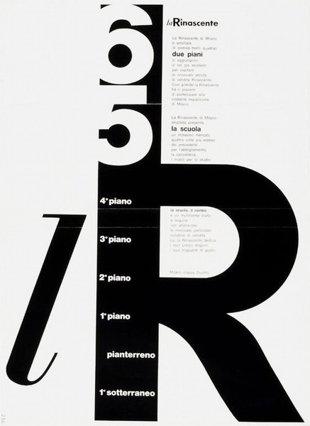
CRVI002918Lora Lamm - la Rinascente — floor directory
1965
1965

CRVI001592John Baeder - Red Robin Diner

CRVI000620Beth Broadwater, Juco - Wake Up and Dream
The Washington Post Magazine, April 29 2018 · 2018
The Washington Post Magazine, April 29 2018 · 2018

CRVI001088Kim Laughton - Untitled

CRVI002181Zhang Huan - 1/2

CRVI000956Societe Anonyme - A head in profile cut from a disc, half black and half white
Trademark · Toilet Soaps, Soaps for the Treatment of Textiles · Puteaux, France · designer unknown · 1932
Trademark · Toilet Soaps, Soaps for the Treatment of Textiles · Puteaux, France · designer unknown · 1932

CRVI001601Charles Angrand - End of the Harvest
c. 1892–1905
c. 1892–1905

CRVI002295Jeff Koons - Bear and Policeman
1988
1988

CRVI000494Armando Veve - Sting Theory
The New York Times Magazine, November 17, 2024 · 2024
The New York Times Magazine, November 17, 2024 · 2024

CRVI001613Alphonse Mucha - Ilsée, Princesse de Tripoli
1897
1897

CRVI001808James Rosenquist - Silo
1964
1964

CRVI001367Joe Henderson - In 'n Out
Designed by Reid Miles, photograph by Francis Wolff · Blue Note 4166 · 1965
Designed by Reid Miles, photograph by Francis Wolff · Blue Note 4166 · 1965

CRVI002157William Eggleston - Untitled (yellow building)

CRVI001959Julie Mehretu - Stadia II
2004
2004

CRVI000276Andrzej Pągowski - Polish Film Ltd.
Film Poster · 1989 · 1989
Film Poster · 1989 · 1989

CRVI000877Maurice Denis - La Fontaine
Esquisse préparatoire du décor Terre Latine · peinture à l’essence sur papier calque collé sur toile · 1906–1908
Esquisse préparatoire du décor Terre Latine · peinture à l’essence sur papier calque collé sur toile · 1906–1908

CRVI000899 - A head pierced by a lightning bolt
Trademark · owner not established · designer unknown
Trademark · owner not established · designer unknown

CRVI001175Thelonious Monk - Thelonious Alone In San Francisco
Designed by Harris Lewine, Ken Braren, Paul Bacon, photograph by William Claxton · Riverside Records RLP 1158 · 1959
Designed by Harris Lewine, Ken Braren, Paul Bacon, photograph by William Claxton · Riverside Records RLP 1158 · 1959

CRVI000904Nixalite Company of America - Two bristling creatures at a barrier; Nixalite's trade is the spiked barrier itself
Trademark · Bird and Rodent Barrier Structure · Davenport, Iowa · designer unknown · 1956
Trademark · Bird and Rodent Barrier Structure · Davenport, Iowa · designer unknown · 1956

CRVI000055Polygon Window - Surfing on Sine Waves
Artwork by The Designers Republic · Warp Records · 1992
Artwork by The Designers Republic · Warp Records · 1992

CRVI000107Masuteru Aoba - The Bread Is For Peace
戦争に使うパンはない · anti-war poster · carries an Arthur Koestler passage in twelve languages · c1975
戦争に使うパンはない · anti-war poster · carries an Arthur Koestler passage in twelve languages · c1975

CRVI000882 - Figure with a brush, an arc and an 'H' bucket
Trademark · owner not established · designer unknown
Trademark · owner not established · designer unknown

CRVI001290Webster Young - For Lady
Designed by Reid Miles, photograph by Esmond Edwards · Prestige 7106 · 1957
Designed by Reid Miles, photograph by Esmond Edwards · Prestige 7106 · 1957

CRVI000676Tom Alberty, Bobby Doherty - The Golden Age of Pods
New York, March 18-31, 2019 · 2019
New York, March 18-31, 2019 · 2019

CRVI001454Nathalie Du Pasquier - Untitled
2013
2013

CRVI001551Yves Tanguy - Indefinite Divisibility
1942
1942

CRVI001684Gino Severini - Self-Portrait
1912
1912

CRVI001948Ai Weiwei - Installation, German Pavilion, Venice Biennale

CRVI000245Peter Bentley - Urgent Copy
Cover for Anthony Burgess · Penguin
Cover for Anthony Burgess · Penguin

CRVI000391Oneohtrix Point Never - Replica
Designer unknown · Software · 2011
Designer unknown · Software · 2011

CRVI001552Yves Tanguy - The Rapidity of Sleep
1945
1945

CRVI001902Douglas Huebler - Mediate
1978
1978

CRVI002338Neo Rauch - Large painting of figures at a green and yellow machine

CRVI001149Jimmy Smith - A New Sound... A New Star... Jimmy Smith At The Organ Volume 1
Designed by Reid Miles, photograph by Francis Wolff · Blue Note BLP 1512 · 1956
Designed by Reid Miles, photograph by Francis Wolff · Blue Note BLP 1512 · 1956

CRVI001373Max Roach - Max Roach + 4 at Newport
Designed by Emmett McBain · EmArcy 36140 · 1958
Designed by Emmett McBain · EmArcy 36140 · 1958

CRVI002121Alice Neel - The Family (John Gruen, Jane Wilson and Julia)
1970
1970

CRVI002224László Moholy-Nagy - Human Mechanics

CRVI000851Richard Turley - I Am My MTV
MTV ident
MTV ident

CRVI000881 - Stylised face in profile with a hand and cross-bar
Trademark · owner not established · designer unknown
Trademark · owner not established · designer unknown